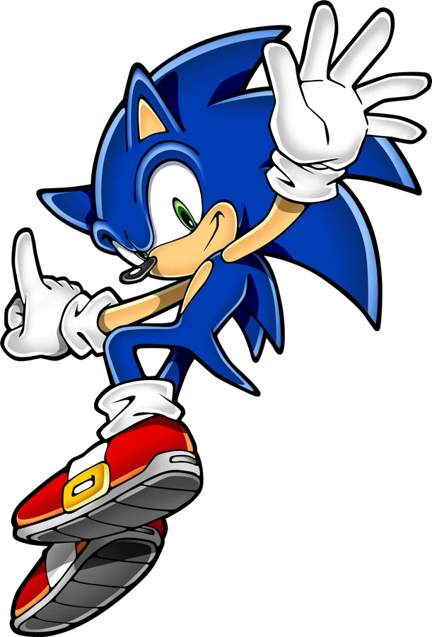
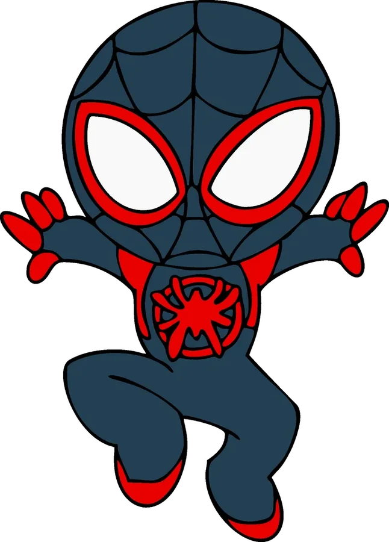

Positions. Les planètes et Pluton suivent les éléments képlériens du JPL (E. M. Standish), valables de 1800 à 2050 à quelques minutes d'arc près. La Lune utilise une théorie simplifiée de son mouvement ; la rotation de la Terre suit l'heure sidérale réelle, donc le côté jour et le côté nuit correspondent à la date affichée.
Orientations. Axes de rotation et méridiens d'après l'UAI. Les satellites orbitent dans le plan équatorial de leur planète, avec leurs distances et périodes réelles ; les phases des satellites galiléens sont calculées, celles des autres sont indicatives.
Échelles. En vue « Lisible », les distances sont compressées (racine carrée de la distance) et les astres agrandis. En vue « Réelle », tout est à l'échelle ; le curseur agrandit les astres sans déplacer les orbites.
Surfaces. Terre et Lune : cartes d'après la NASA (exemples three.js). Les autres surfaces sont générées par calcul à partir de leurs traits réels (bandes, Grande Tache rouge, calottes, région Tombaugh…).